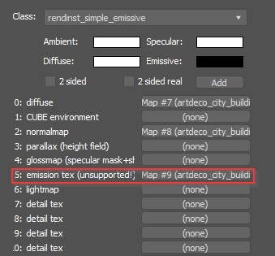

Shader: rendinst_simple_emissive
Overview
A simple emissive shader primarily used for basic assets such as light bulbs, spotlights, etc. It can also be applied using an emissive mask.
Parameters
script:t="emission_only_at_night=1"– Controls emission visibility during nighttime only.1: Enabled0: Disabled
Note
This parameter works in Asset Viewer also (setting the environment to nighttime will trigger the emission).
Important
Always set this parameter unless emission is required at all times (e.g., for skyscraper lights, car headlights, etc.).
script:t="emission_fadeout=1000,5000,0,0"– Controls the fade-out of the emission (if needed). The first two components are functional:Start of the fade-out.
End of the fade-out.
The 3rd and 4th components must be included but are not used.
script:t="emission_strength=1"– Specifies the strength of the emission. Values range from0to potentially infinity. A value of1is usually sufficient as the maximum.script:t="emission_color=0.94,1,0,0"– Defines the emission color in RGB, with conversion as follows:0 RGB =
0in the shader255 RGB =
1in the shader
Functionality
Standard Operation
The shader works based on an emissive mask located in the alpha channel of the diffuse texture:
Black – No emission
Lighter than black – Emits with the intensity of white
Albedo color – The emission color matches the albedo
Separate Emission Mask
If necessary, a separate emission mask can be applied, and the shader will automatically use it. The mask is connected in the 6th texture slot (counting starts from 0, so in 3ds Max, this would be the 5th slot).
A separate emission mask is typically required when procedural painting is used on the asset, where white represents paintable areas. A conflict can arise between the paint and emissive maps, causing areas meant to emit light to be painted instead, and vice versa.
{kind=link}
Object Painting in War Thunder
Not yet implemented, but this is precisely why the separate emissive mask functionality was prepared. The idea is for a single shader to both paint and emit light on objects – such as buildings on aircraft.
Operation principle:
If only the diffuse and normal maps are connected, the shader functions as a standard emissive shader.
If a separate emissive mask is connected, the shader can paint based on the diffuse alpha as if it were a paint mask (like the standard simple_aces/rendinst_simple shader in War Thunder).
See also
Painting parameters are standard for War Thunder, see Procedural Rendinst Painting.